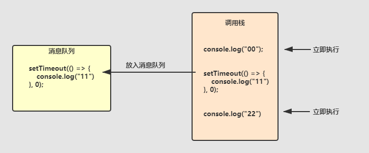
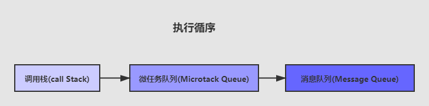
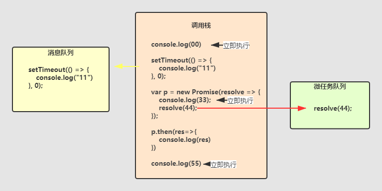

# Event loop
在了解时间循环之前，要清楚一个问题，为什么需要异步？
举个例子，通常 javascript 代码是按顺序执行的。
console.log('1');
console.log('2');
console.log('3');
// 1 2 3
这三行代码的执行循序永远不会变。
现在我有一个网络请求，需要从服务器获取一个数据。
console.log('1');
// 向 http://example.com 网址发送了一个网络请求
axios('http://example.com')
.then( res =>{
// res 是服务器返回的内容
console.log(res);
})
console.log('3');
如果没有事件循环，分析一下上面的代码的执行结果：
首先执行第一行，打印 1，再执行第二个函数（axios），并等待结果，服务器给我们返回结果以后，打印返回的结果 res，最后打印 3（浏览器不是这样执行的）。
如果服务器访问速度很慢，执行到第二行，浏览器会处于一直等待状态，这时候用户点击一个网页上的点击按钮，这个操作等到服务器返回数据之后执行。
这种用户体验是很差，所以就有了 javascript 的事件循环机制。
事件循环有三部分组成：
- 调用栈(call Stack)
- 消息队列(Message Queue)
- 微任务队列(Microtack Queue)
普通函数执行时先放入调用栈中按顺序执行并立即释放。
# 1、调用栈
也叫call Stack。普通函数执行时先放入调用栈中按顺序执行并立即释放。
function foo1(){
console.log("22")
}
function foo() {
console.log("11");
foo1()
console.log("33")
}
foo()
建议先自己做一下，再看答案。
这个应该不难理解，就是按顺序执行，这里也没有是么异步。
// 打印顺序是：11 22 33
# 2、消息队列
也叫Message Queue。宏任务（setTimeout，setInteval，xhr…）执行时放入消息队列中，执行完调用栈中的任务后执行。
再看下面的例子：
console.log("00");
setTimeout(() => {
console.log("11")
}, 0);
console.log("22")
建议先自己做一下，再看答案。

分析一下，首先遇到普通函数立即执行，所以打印 “00”。
遇到 setTimeout 放入消息队列中，往下执行。
打印 “22”，清空调用栈。
最后运行消息队列中的任务，打印“11”
// 打印顺序是：00 22 11
我们在做一道题：
console.log("00");
function foo() {
console.log("11");
setTimeout(() => {
console.log("22")
}, 0);
console.log("33")
}
foo();
console.log("44")
建议先自己做一下，再看答案。
// 打印顺序是：00 11 33 44 22
# 2、微任务队列
也叫 Microtack Queue。微任务 promise，async/await等属于微任务。
不了解 promise，先看一下这篇。
微任务先放入到微任务队列中，调用栈清空后立即被执行。

看下面这个例子
console.log("00")
setTimeout(() => {
console.log(11)
}, 0);
var p = new Promise(resolve => {
console.log(33);
resolve(44);
});
p.then(res=>{
console.log(res)
})
console.log(55)
建议先自己做一下，再看答案。

00
33
55
44
11